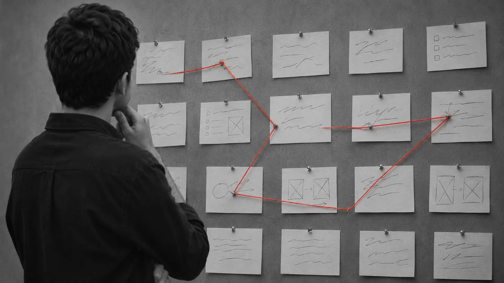

// services · Ø2
استراتژی محتوا و سناریو
ستونهای محتوا، هوکها و سناریوی ریلزها، برای صدای خودت. نه از روی قالبی که هزار نفر دیگه هم دارن.

چی گیرت میاد
- 01
ستونهای محتوا
سه تا پنج موضوع ثابت که پیجت روشون شناخته میشه.
- 02
سناریوی کامل ریلز
هوک، بدنه، جمعبندی و جملهی آخر؛ با زمانبندی و متن روی صفحه.
- 03
برنامهی هفتگی
چی، کی، با چه فرمتی. تو فقط ضبط میکنی.
- 04
کپشن و کلمهی کامنت
کپشنی که از «بیشتر» رد میشه و کلمهای که مخاطب رو به دایرکت میآره.
مراحل
- 01
شناخت پیج و مخاطب
میبینیم الان چی جواب میده و چی نه.
- 02
ستونها و لحن
موضوعها و جملههای امضای پیجت رو میسازیم.
- 03
سناریوهای هفتگی
هر هفته سناریوهای آمادهی ضبط تحویل میگیری.
سؤالهای رایج
سناریوها شبیه پیجهای دیگه نمیشه؟
قانون اول ما همینه: شعبهی یکی دیگه نشو. هر سناریو از حرف و داستان خودت ساخته میشه.
وقت فکر کردن به محتوا ندارم.
دقیقاً برای همین ساخته شده. فکرش با ما، ضبطش با تو.
هر وقت وقتش شد، ما اینجاییم.
ما چیزی نمیفروشیم. انتخاب میکنیم با کی کار کنیم.